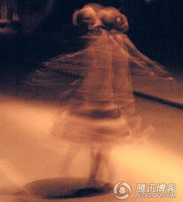
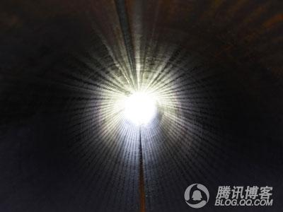
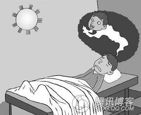
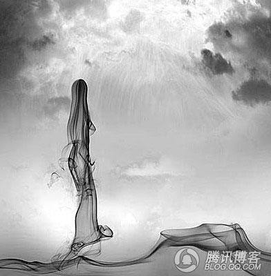
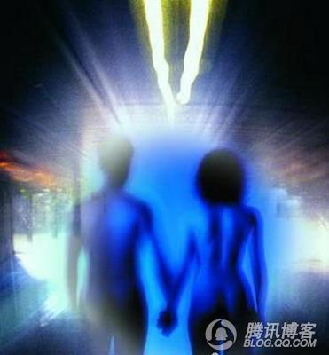
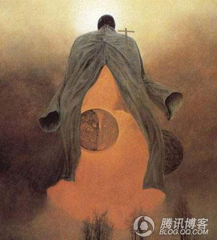

按照宗教的观点，死亡只是人类生命的一部分，由于人们永远无法知道死后的世界，因此死亡一直是一件神秘而让我们恐惧而着迷的事。濒死体验（NDE）在我们的日常用语当中已是司空见惯了。而诸如“我的一生在眼前闪过”以及“见到天堂的灵光”等说法，是人们对于一些人在弥留之际所经历的那些奇异的、看似超自然的体验进行了数十年的研究后得出的。然而，濒死体验究竟指的是什么呢？它们是幻觉吗？是精神体验？是存在来世的证据？甚或仅仅是临终前发生在大脑和感觉器官中的化学反应？虽然我们不知道死后的世界，但是科学家通过观察研究发现，人类在死亡前却有如下13种神秘的感受：      
1.明知死讯
他们亲耳听到医生或是在场的其他人明确宣告自己的死亡。他会感觉到生理的衰竭到达极限。
2.体验愉悦
“濒死体验”的初期有一种平和安详、令人愉悦的感受。首先会感到疼痛，但是这种疼痛感一闪而过，随后会发觉自己悬浮在一个黑暗的维度中。一种从未体验过的最舒服的感觉将他包围。
3.进入黑洞
有人反映他们感到被突然拉入一个黑暗的空间。你会开始有所知觉，那就像一个没有空气的圆柱体，感觉上是一个过渡地带，一边是现世，一边是异域。
4.灵魂脱体
发现自己站在了体外的某一处观察自己的躯壳。一个落水的男人回忆说，他自己脱离了身体，独自处在一个空间中，仿佛自己是一片羽毛
5.语言受限
他们竭力想告诉他人自身所处的困境，但没有人听到他们的话。有一名女子说，我试着跟他们说话，但是没人能听到。
6.时间消失
脱体状态下，对时间的感受消失了。有人回忆说，那段时间里，他曾不停地出入自己的肉体。
7.感官灵敏
视觉、听觉比之前更加灵敏。一个男子说，他从未看得如此清楚过，视力水平得到了不可思议的增强
8.孤独无助
在这之后，会出现强烈的孤立感和孤独感。一位男子说，他无论怎样努力都无法和别人交流，所以，“我感到非常孤单”。
9.他“人”陪伴
这时，周围出现了别的“人”。这个“人”，要么是来协助他们安然过渡到亡者之国，要么是来告诉他们丧钟尚未敲响，得先回去再待一段时间。
10.出现亮光
在“濒死体验”最后的时刻，会出现亮光。这道光具有某种“人性”，非常明确的“人性”。
11.回望人生
这个时候，当事人会对一生做一次全景式的回顾。当亲历者用时间短语来描述它时，都是“一幕接着一幕，按事情发生的时间顺序移动的，甚至伴随着画面，当时的一些感觉和情感都得以重新体验”。
12.边界阻隔
在这时，人会遇到一道可以被称作是“边缘”或者“界限”之类的东西，阻隔你到某个地方去，关于它的形态有多种表述：一摊水、一团烟雾、一扇门、一道旷野中的篱笆，或者是一条线。
13.生命归来
如果有幸被救活了，在“濒死体验”进行到某种程度后，人们必须“回来”。在最开始的时候，许多人都想赶快回到身体中去，但是，随着濒死体验的深入，他开始排斥回到原来的身体，如果遇上了光的存在，这种情绪就更为强烈。 随后，你就真的“回来”了。 人是一种相当依赖精神的生物，当人“濒死”时，一道微弱的白光就可以让死亡变得不那么可怕。人死的时候，整个一生都将被重新评价，这种评价完全不依赖于你是否腰缠万贯，身份地位是否显赫，而仅仅取决于在你一生里与他人分享的爱和温暖有多少。
Source: http://zlz5201.blog.163.com/blog/static/167618422201051101327242/